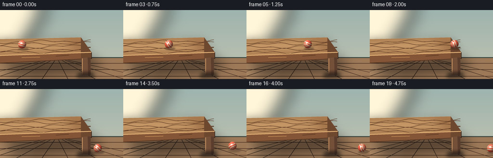
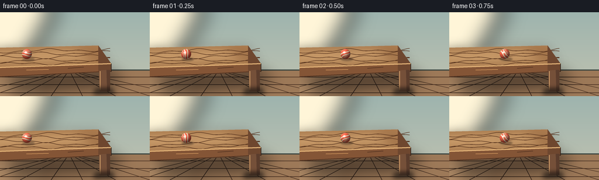
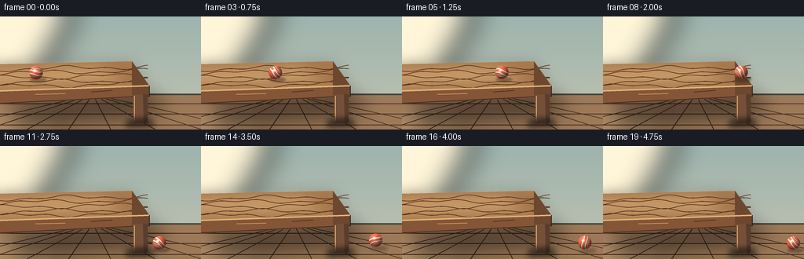

CODING AGENTS AS PIXEL WORLD MODELS
traex/DeepSeek-V4.1-Flash · instance_preservation_0019
点击播放 · 原生 RGB 像素
逐轮保存的候选
回放视频、检查图与代码变化。
每份候选均可单独播放。实际图片检查记录在下方工具轨迹中。
候选 01播放与检查图
点击播放 · 原生 RGB 像素


展开代码变化
--- 上一保存版本
+++ 本次保存版本
@@ -0,0 +1,378 @@
+from pathlib import Path
+import math
+
+import numpy as np
+from PIL import Image, ImageDraw, ImageFilter
+
+import artifact_io
+
+
+WIDTH = 256
+HEIGHT = 144
+FPS = 4
+FRAME_COUNT = 20
+SS = 4
+SW = WIDTH * SS
+SH = HEIGHT * SS
+
+
+def srgb(hex_color):
+ value = hex_color.lstrip("#")
+ return tuple(int(value[i:i + 2], 16) for i in (0, 2, 4))
+
+
+def mix(a, b, amount):
+ return tuple(round(a[i] + (b[i] - a[i]) * amount) for i in range(3))
+
+
+def vertical_gradient(size, top, bottom):
+ width, height = size
+ y = np.linspace(0.0, 1.0, height, dtype=np.float32)[:, None, None]
+ top_arr = np.array(top, dtype=np.float32)[None, None, :]
+ bottom_arr = np.array(bottom, dtype=np.float32)[None, None, :]
+ rgb = top_arr * (1.0 - y) + bottom_arr * y
+ return Image.fromarray(np.repeat(rgb.astype(np.uint8), width, axis=1), "RGB")
+
+
+def smoothstep(edge0, edge1, value):
+ t = np.clip((value - edge0) / (edge1 - edge0), 0.0, 1.0)
+ return t * t * (3.0 - 2.0 * t)
+
+
+def add_soft_shape(base, polygon, color, blur):
+ layer = Image.new("RGBA", base.size, (0, 0, 0, 0))
+ draw = ImageDraw.Draw(layer)
+ draw.polygon(polygon, fill=(*color, 255))
+ layer = layer.filter(ImageFilter.GaussianBlur(blur))
+ base.alpha_composite(layer)
+
+
+def make_static_scene():
+ scene = vertical_gradient((SW, SH), srgb("#9eb4ae"), srgb("#c2c3b1")).convert("RGBA")
+ draw = ImageDraw.Draw(scene, "RGBA")
+
+ # A soft window-shaped light patch gives the room a directional key light.
+ add_soft_shape(
+ scene,
+ [(0, 0), (92 * SS, 0), (38 * SS, 94 * SS), (0, 108 * SS)],
+ (255, 245, 216),
+ 18 * SS,
+ )
+ add_soft_shape(
+ scene,
+ [(0, 73 * SS), (23 * SS, 66 * SS), (31 * SS, 102 * SS), (0, 108 * SS)],
+ (255, 250, 230),
+ 9 * SS,
+ )
+
+ # Floor.
+ draw.rectangle((0, 99 * SS, SW, SH), fill=(*srgb("#9d7958"), 255))
+ floor_glow = Image.new("RGBA", scene.size, (0, 0, 0, 0))
+ glow_draw = ImageDraw.Draw(floor_glow, "RGBA")
+ glow_draw.polygon(
+ [(0, 102 * SS), (87 * SS, 99 * SS), (71 * SS, SH), (0, SH)],
+ fill=(255, 216, 168, 46),
+ )
+ scene.alpha_composite(floor_glow.filter(ImageFilter.GaussianBlur(13 * SS)))
+ draw = ImageDraw.Draw(scene, "RGBA")
+
+ # Floor boards recede toward a vanishing point above the image.
+ vanishing_x = 118 * SS
+ for x in (-68, -18, 34, 87, 141, 198, 257, 319):
+ draw.line(
+ [(vanishing_x, 99 * SS), (x * SS, SH)],
+ fill=(76, 51, 36, 58),
+ width=max(1, SS),
+ )
+ for y, alpha in ((111, 35), (124, 52), (138, 70)):
+ draw.line([(0, y * SS), (SW, y * SS)], fill=(72, 48, 34, alpha), width=SS)
+ draw.line([(0, 99 * SS), (SW, 99 * SS)], fill=(62, 72, 66, 160), width=2 * SS)
+
+ # Contact shadow and the table's cast shadow.
+ add_soft_shape(
+ scene,
+ [(8 * SS, 116 * SS), (184 * SS, 103 * SS), (212 * SS, 118 * SS), (31 * SS, 133 * SS)],
+ (55, 43, 35),
+ 13 * SS,
+ )
+
+ # Back edge, top, and front face of the table.
+ table_top = [
+ (-12 * SS, 61 * SS),
+ (168 * SS, 57 * SS),
+ (190 * SS, 88 * SS),
+ (-12 * SS, 95 * SS),
+ ]
+ table_top_layer = Image.new("RGBA", scene.size, (0, 0, 0, 0))
+ top_draw = ImageDraw.Draw(table_top_layer, "RGBA")
+ top_draw.polygon(table_top, fill=(*srgb("#b78454"), 255))
+ scene.alpha_composite(table_top_layer)
+ draw = ImageDraw.Draw(scene, "RGBA")
+
+ # Broad sunlit area and darker far edge on the tabletop.
+ top_light = Image.new("RGBA", scene.size, (0, 0, 0, 0))
+ light_draw = ImageDraw.Draw(top_light, "RGBA")
+ light_draw.polygon(
+ [(-10 * SS, 61 * SS), (145 * SS, 58 * SS), (165 * SS, 88 * SS), (-10 * SS, 93 * SS)],
+ fill=(255, 221, 164, 72),
+ )
+ light_draw.polygon(
+ [(128 * SS, 58 * SS), (168 * SS, 57 * SS), (190 * SS, 88 * SS), (168 * SS, 90 * SS)],
+ fill=(70, 42, 28, 47),
+ )
+ scene.alpha_composite(top_light.filter(ImageFilter.GaussianBlur(9 * SS)))
+ draw = ImageDraw.Draw(scene, "RGBA")
+
+ # Wood grain: long, low-contrast curves following the tabletop perspective.
+ for offset, alpha, phase in (
+ (67, 44, 0.8),
+ (72, 31, 2.2),
+ (78, 50, 4.4),
+ (84, 33, 1.4),
+ (89, 40, 3.6),
+ ):
+ points = []
+ for x in range(-8, 190, 4):
+ t = x / 190.0
+ y = offset + (2.0 * math.sin(t * 9.0 + phase) + 1.4 * math.sin(t * 23.0 + phase))
+ y -= 3.2 * t
+ points.append((x * SS, y * SS))
+ draw.line(points, fill=(83, 48, 27, alpha), width=max(1, SS))
+
+ # Front apron and right side give the table physical thickness.
+ draw.polygon(
+ [(-12 * SS, 95 * SS), (190 * SS, 88 * SS), (190 * SS, 102 * SS), (-12 * SS, 112 * SS)],
+ fill=(*srgb("#845536"), 255),
+ )
+ draw.polygon(
+ [(168 * SS, 57 * SS), (190 * SS, 88 * SS), (190 * SS, 102 * SS), (168 * SS, 103 * SS)],
+ fill=(*srgb("#6e472f"), 255),
+ )
+ draw.line(
+ [(-12 * SS, 95 * SS), (190 * SS, 88 * SS)],
+ fill=(*srgb("#e2b277"), 255),
+ width=2 * SS,
+ )
+ draw.line(
+ [(190 * SS, 88 * SS), (190 * SS, 102 * SS)],
+ fill=(44, 31, 24, 155),
+ width=SS,
+ )
+ draw.line(
+ [(-12 * SS, 111 * SS), (190 * SS, 101 * SS)],
+ fill=(52, 32, 22, 120),
+ width=SS,
+ )
+
+ # Right front leg, with a narrow lit face and a darker side face.
+ draw.polygon(
+ [(169 * SS, 100 * SS), (182 * SS, 99 * SS), (183 * SS, 136 * SS), (170 * SS, 136 * SS)],
+ fill=(*srgb("#755039"), 255),
+ )
+ draw.polygon(
+ [(182 * SS, 99 * SS), (188 * SS, 99 * SS), (188 * SS, 135 * SS), (183 * SS, 136 * SS)],
+ fill=(*srgb("#5b3d2d"), 255),
+ )
+ draw.line(
+ [(171 * SS, 101 * SS), (171 * SS, 134 * SS)],
+ fill=(229, 177, 116, 135),
+ width=SS,
+ )
+ add_soft_shape(
+ scene,
+ [(164 * SS, 132 * SS), (190 * SS, 131 * SS), (197 * SS, 139 * SS), (159 * SS, 140 * SS)],
+ (48, 37, 30),
+ 4 * SS,
+ )
+
+ # Small table edge chips and grain keep the large surfaces from feeling flat.
+ draw.line(
+ [(45 * SS, 99 * SS), (83 * SS, 98 * SS)],
+ fill=(221, 161, 99, 88),
+ width=SS,
+ )
+ draw.line(
+ [(116 * SS, 96 * SS), (143 * SS, 94 * SS)],
+ fill=(71, 42, 27, 74),
+ width=SS,
+ )
+
+ return scene.convert("RGB")
+
+
+def render_ball(radius, roll_angle):
+ size = int(math.ceil(radius * 2.6))
+ center = (size - 1) / 2.0
+ yy, xx = np.mgrid[0:size, 0:size].astype(np.float32)
+ u = (xx - center) / radius
+ v = (yy - center) / radius
+ rr = np.sqrt(u * u + v * v)
+ inside = rr <= 1.0
+ z = np.sqrt(np.clip(1.0 - u * u - v * v, 0.0, 1.0))
+
+ ca, sa = math.cos(roll_angle), math.sin(roll_angle)
+ ur = ca * u - sa * v
+ vr = sa * u + ca * v
+
+ # Two cream stripes wrap around a saturated coral rubber ball.
+ wave1 = 0.17 * np.sin(2.2 * ur + 0.45)
+ stripe1 = smoothstep(0.12, 0.18, np.abs(vr - wave1)) * (
+ 1.0 - smoothstep(0.33, 0.39, np.abs(vr - wave1))
+ )
+ wave2 = -0.56 + 0.10 * np.sin(3.0 * ur + 1.7)
+ stripe2 = smoothstep(0.045, 0.085, np.abs(vr - wave2)) * (
+ 1.0 - smoothstep(0.14, 0.18, np.abs(vr - wave2))
+ )
+ stripe = np.maximum(stripe1, stripe2)
+
+ base = np.empty((size, size, 3), dtype=np.float32)
+ coral = np.array(srgb("#e95f45"), dtype=np.float32)
+ cream = np.array(srgb("#f6e5bd"), dtype=np.float32)
+ base[:] = coral
+ base = base * (1.0 - stripe[..., None]) + cream * stripe[..., None]
+
+ # Seam line just inside each cream band.
+ seam1 = np.exp(-((np.abs(vr - wave1) - 0.155) / 0.018) ** 2)
+ seam1 += np.exp(-((np.abs(vr - wave1) - 0.36) / 0.018) ** 2)
+ seam2 = np.exp(-((np.abs(vr - wave2) - 0.065) / 0.014) ** 2)
+ seam2 += np.exp(-((np.abs(vr - wave2) - 0.16) / 0.014) ** 2)
+ seam = np.clip(np.maximum(seam1, seam2), 0.0, 0.72)
+ seam_color = np.array(srgb("#923e34"), dtype=np.float32)
+ base = base * (1.0 - seam[..., None]) + seam_color * seam[..., None]
+
+ # Spherical shading with a cool rim and a compact warm specular highlight.
+ nx, ny, nz = u, v, z
+ light = np.array([-0.44, -0.58, 0.68], dtype=np.float32)
+ light /= np.linalg.norm(light)
+ diffuse = np.clip(nx * light[0] + ny * light[1] + nz * light[2], 0.0, 1.0)
+ shade = 0.43 + 0.70 * diffuse
+ shade += 0.08 * np.clip(-ny, 0.0, 1.0) * (1.0 - nz)
+ rgb = np.clip(base * shade[..., None], 0.0, 255.0)
+
+ view = np.array([0.0, 0.0, 1.0], dtype=np.float32)
+ half_vec = light + view
+ half_vec /= np.linalg.norm(half_vec)
+ spec = np.clip(nx * half_vec[0] + ny * half_vec[1] + nz * half_vec[2], 0.0, 1.0) ** 42
+ spec *= 188.0
+ rgb = np.clip(rgb + spec[..., None], 0.0, 255.0)
+
+ rim = np.clip((-nx * 0.35 - ny * 0.78 + nz * 0.25), 0.0, 1.0) ** 4
+ rim *= smoothstep(0.63, 0.98, rr)
+ rgb = np.clip(rgb + rim[..., None] * np.array([35, 52, 53], dtype=np.float32), 0.0, 255.0)
+
+ edge_alpha = 1.0 - smoothstep(0.94, 1.0, rr)
+ alpha = (edge_alpha * 255.0).astype(np.uint8)
+ alpha[~inside] = 0
+ rgba = np.dstack([rgb.astype(np.uint8), alpha])
+ return Image.fromarray(rgba, "RGBA")
+
+
+def draw_shadow(frame, x, y, radius, airborne):
+ layer = Image.new("RGBA", frame.size, (0, 0, 0, 0))
+ draw = ImageDraw.Draw(layer, "RGBA")
+ if airborne:
+ floor_y = 126.0
+ height = max(0.0, floor_y - y)
+ spread = 1.0 + height / 42.0
+ alpha = int(np.clip(105 - height * 0.85, 35, 100))
+ shadow_w = radius * 2.5 * spread
+ shadow_h = radius * 0.58 * spread
+ cy = floor_y + 2.2
+ cx = x + 4.0 + height * 0.055
+ else:
+ alpha = 104
+ shadow_w = radius * 2.35
+ shadow_h = radius * 0.64
+ cy = y + radius * 1.02
+ cx = x + 2.8
+ draw.ellipse(
+ [
+ (cx - shadow_w / 2) * SS,
+ (cy - shadow_h / 2) * SS,
+ (cx + shadow_w / 2) * SS,
+ (cy + shadow_h / 2) * SS,
+ ],
+ fill=(52, 35, 27, alpha),
+ )
+ blur = 1.2 * SS if not airborne else (2.0 + (126.0 - y) / 30.0) * SS
+ layer = layer.filter(ImageFilter.GaussianBlur(blur))
+ frame.alpha_composite(layer)
+
+
+def ball_state(frame_index):
+ radius = 8.8
+ # Roll to the right across the table, then follow a short stylized fall.
+ if frame_index <= 8:
+ x = 46.0 + 16.25 * frame_index
+ y = 71.8 - 0.7 * (x - 46.0) / 130.0
+ return x, y, radius, False, x - 46.0
+
+ # Edge position at t=2.0s. These values are deliberately eased for 4 fps.
+ edge_x, edge_y = 176.0, 71.1
+ fall_points = {
+ 9: (185.0, 82.5),
+ 10: (194.0, 102.0),
+ 11: (203.0, 123.4),
+ 12: (211.0, 108.0),
+ 13: (219.0, 123.6),
+ 14: (227.0, 118.5),
+ 15: (234.0, 123.8),
+ 16: (240.0, 122.8),
+ 17: (245.0, 123.8),
+ 18: (249.0, 123.8),
+ 19: (252.0, 123.8),
+ }
+ x, y = fall_points[frame_index]
+ airborne = frame_index in (9, 10, 12, 14, 17)
+ if frame_index == 11:
+ airborne = False
+ distance = (edge_x - 46.0) + math.hypot(x - edge_x, y - edge_y)
+ return x, y, radius, airborne, distance
+
+
+def render():
+ static = make_static_scene()
+ frames = []
+ radius = 8.8
+
+ for index in range(FRAME_COUNT):
+ frame = static.convert("RGBA")
+ x, y, radius, airborne, distance = ball_state(index)
+ draw_shadow(frame, x, y, radius, airborne)
+
+ roll_angle = distance / radius
+ ball_hi = render_ball(radius * SS, roll_angle)
+ bx = round(x * SS - ball_hi.width / 2)
+ by = round(y * SS - ball_hi.height / 2)
+ frame.alpha_composite(ball_hi, (bx, by))
+
+ # Very light edge light catches the table and floor near the ball.
+ glow = Image.new("RGBA", frame.size, (0, 0, 0, 0))
+ glow_draw = ImageDraw.Draw(glow, "RGBA")
+ glow_draw.ellipse(
+ [
+ (x - radius * 1.5) * SS,
+ (y - radius * 1.5) * SS,
+ (x + radius * 1.5) * SS,
+ (y + radius * 1.5) * SS,
+ ],
+ outline=(255, 196, 140, 25),
+ width=SS,
+ )
+ frame.alpha_composite(glow.filter(ImageFilter.GaussianBlur(2.5 * SS)))
+
+ down = frame.convert("RGB").resize((WIDTH, HEIGHT), Image.Resampling.LANCZOS)
+ frames.append(np.asarray(down, dtype=np.uint8))
+
+ return np.stack(frames)
+
+
+def main():
+ case_dir = Path(__file__).resolve().parent
+ frames = render()
+ artifact_io.save(frames, case_dir)
+ print(f"wrote {len(frames)} frames to {case_dir}")
+
+
+if __name__ == "__main__":
+ main()
候选 02播放与检查图
点击播放 · 原生 RGB 像素

展开代码变化
--- 上一保存版本
+++ 本次保存版本
@@ -31,7 +31,7 @@
top_arr = np.array(top, dtype=np.float32)[None, None, :]
bottom_arr = np.array(bottom, dtype=np.float32)[None, None, :]
rgb = top_arr * (1.0 - y) + bottom_arr * y
- return Image.fromarray(np.repeat(rgb.astype(np.uint8), width, axis=1), "RGB")
+ return Image.fromarray(np.repeat(rgb.astype(np.uint8), width, axis=1))
def smoothstep(edge0, edge1, value):
@@ -264,7 +264,7 @@
alpha = (edge_alpha * 255.0).astype(np.uint8)
alpha[~inside] = 0
rgba = np.dstack([rgb.astype(np.uint8), alpha])
- return Image.fromarray(rgba, "RGBA")
+ return Image.fromarray(rgba)
def draw_shadow(frame, x, y, radius, airborne):
@@ -275,9 +275,9 @@
height = max(0.0, floor_y - y)
spread = 1.0 + height / 42.0
alpha = int(np.clip(105 - height * 0.85, 35, 100))
- shadow_w = radius * 2.5 * spread
- shadow_h = radius * 0.58 * spread
- cy = floor_y + 2.2
+ shadow_w = radius * 2.25 * spread
+ shadow_h = radius * 0.52 * spread
+ cy = y + radius + 1.6
cx = x + 4.0 + height * 0.055
else:
alpha = 104
@@ -307,25 +307,23 @@
y = 71.8 - 0.7 * (x - 46.0) / 130.0
return x, y, radius, False, x - 46.0
- # Edge position at t=2.0s. These values are deliberately eased for 4 fps.
+ # Edge position at t=2.0s. Keep the complete silhouette on screen at 4 fps.
edge_x, edge_y = 176.0, 71.1
fall_points = {
9: (185.0, 82.5),
10: (194.0, 102.0),
11: (203.0, 123.4),
- 12: (211.0, 108.0),
- 13: (219.0, 123.6),
- 14: (227.0, 118.5),
- 15: (234.0, 123.8),
- 16: (240.0, 122.8),
- 17: (245.0, 123.8),
- 18: (249.0, 123.8),
- 19: (252.0, 123.8),
+ 12: (210.0, 112.0),
+ 13: (216.5, 123.6),
+ 14: (222.5, 120.0),
+ 15: (228.0, 123.8),
+ 16: (232.8, 123.1),
+ 17: (237.0, 123.8),
+ 18: (240.2, 123.8),
+ 19: (242.5, 123.8),
}
x, y = fall_points[frame_index]
- airborne = frame_index in (9, 10, 12, 14, 17)
- if frame_index == 11:
- airborne = False
+ airborne = frame_index in (9, 10, 12, 14, 16, 18)
distance = (edge_x - 46.0) + math.hypot(x - edge_x, y - edge_y)
return x, y, radius, airborne, distance
可观测工具轨迹
实际执行的命令与返回图片。
命令 1exit 0
/bin/bash -c "pwd && rg --files -g 'prompt.txt' -g 'GENERATION_RULES.md' -g 'task_spec.json' -g '"'!node_modules'"' -g '"'!venv'"'"
命令 2exit 0
/bin/bash -c 'git status --short && find . -maxdepth 2 -type f | sort | head -200'
命令 3exit 0
/bin/bash -c 'cat GENERATION_RULES.md'
命令 4exit 0
/bin/bash -c 'cat prompt.txt'
命令 5exit 0
/bin/bash -c 'cat task_spec.json'
命令 6exit 0
/bin/bash -c "sed -n '1,260p' artifact_io.py && sed -n '1,220p' player_template.html"
命令 7exit 0
/bin/bash -c 'python generate.py'
命令 8exit 0
/bin/bash -c 'mkdir -p candidate_01 && cp -a frames candidate_01/ && cp -a inspection.png transition_check.png pixels.npz index.html task_spec.json prompt.txt GENERATION_RULES.md candidate_01/'
命令 9exit 0
/bin/bash -c "nl -ba generate.py | sed -n '24,42p'"
命令 10exit 0
/bin/bash -c "nl -ba generate.py | sed -n '246,350p'"
命令 11exit 0
/bin/bash -c 'python generate.py'
命令 12exit 0
/bin/bash -c 'ls -la frames | tail -5 && du -h pixels.npz index.html inspection.png transition_check.png'
命令 13exit 0
/bin/bash -c 'python -m py_compile generate.py artifact_io.py'
命令 14exit 0
/bin/bash -c "python - <<'PY'
from pathlib import Path
import numpy as np
from PIL import Image
p=Path('.')
files=sorted((p/'frames').glob('*.png'))
arr=np.stack([np.asarray(Image.open(f)) for f in files])
print('frames', len(files), 'shape', arr.shape, 'dtype', arr.dtype)
print('range', int(arr.min()), int(arr.max()), 'unique colors', len(np.unique(arr.reshape(-1,3), axis=0)))
print('adjacent mean abs diff', float(np.abs(arr[1:].astype(int)-arr[:-1].astype(int)).mean()))
print('artifacts', {x: (p/x).stat().st_size for x in ['pixels.npz','index.html','inspection.png','transition_check.png'] if (p/x).exists()})
PY"视觉工具实际返回图片 1

视觉工具实际返回图片 2

保存候选 2 份；完成命令 14 次；可验证图片返回 2 张。原始 API 响应与完整日志保留在本地。